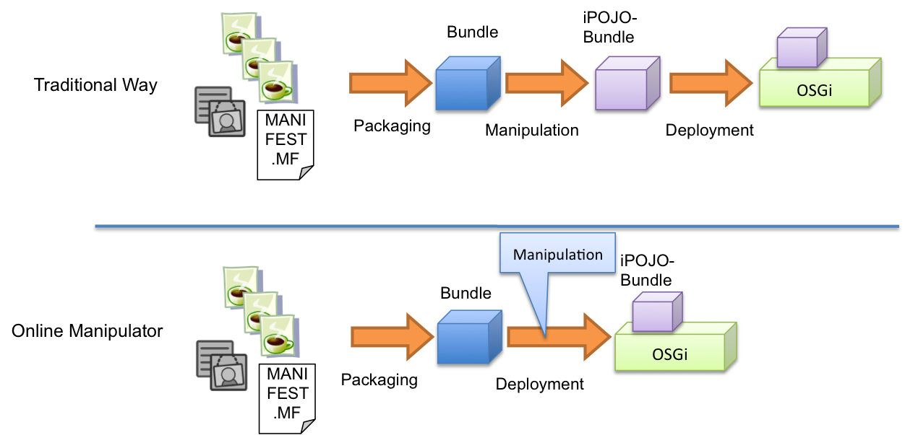

Apache Felix iPOJO Online Manipulator
iPOJO generally requires an additional packaging step to preapre the bundle to be managed by iPOJO. Despite this step doesn't change the class semantic, it can be a little annoying. The online manipulator avoids this offline step!
| 1.3.0-SNAPSHOT This feature is only provided in iPOJO 1.3.0-SNAPSHOT, and will be available in the iPOJO 1.4. If you want to use it, just use the iPOJO trunk. |
Features
iPOJO is based on a bytecode manipulation. This manipulate is safe and does not change the class semantics. Classes can still used after the manipulation without iPOJO. However this manipulation is required for iPOJO management. Generally, this manipulation occurs offline during the packaging time. The online manipulator allows to do this manipulation at install time.
The online manipulator:
- avoids offline manipulation
- supports annotations
- supports XSD schema

This is quite useful if you don't want to add an extra packaging step, and provides the same capabilities as the "regular" way.
Usage
The online-manipulator is in fact an URL Handler. So, it will process every bundle using a special URL prefix. To use it, just follows the below instructions:
- Install and Start the URL Handler *
This is a requirement. You must install and start the URL handler as well as iPOJO (core). The URL Handler is build by the online-manipulator iPOJO sub-project.
- Install a bundle using the ipojo: URL prefix
Using the handler is quite easy. When you want to deploy a non-manipulated iPOJO bundle just use an url likeinstall ipojo:file:/.../bundle.jar
The complete URL syntax is
| install ipojo:bundle_url[!metadata_url] |
When using the ipojo: prefix, the OSGi gateway delegates the loading to the url handler manipulating the bundle before its installation.
Dealing with metadata
If the installed bundle contains a metadata.xml file either in its root or in the META-INF directory, the online manipulator will use it. However, you can also provide an external metadata.xml file by indicating the url of the file like in
| install ipojo:bundle_url!metadata_url |
If you provide such url, it will override the contained metadata.xml file.